Context
Research synthesis
I used both in-depth interviews and large-scale surveys. By bringing together direct interviews, broad surveys, and market trends, we turned our assumptions into a user profile supported by data.
5 interviews
Deep-dive sessions with Lighthouse Customers to uncover unarticulated pain points in the drafting workflow.
50+ responses
Broad Fusion user surveys identifying high-frequency friction points and automation expectations across the user base.
Market research
Analysis of industry shifts toward model-based definition and the competitive landscape of CAD automation.
Persona
Jon, 34
Lead Mechanical EngineerAutomotive supplier
“I don't only need the software to be ‘smart.’ I need it to be fast, predictable, and transparent.”
Professional bio
Jon connects the finished 3D model to the shop floor. In the automotive supply chain, he creates the detailed 2D technical drawings that guide CNC machines. He often works under tight deadlines and spends hours adding dimensions by hand, which can lead to mistakes and slowdowns from repetitive drafting work.
Key goals
- Zero downtime on the shop floor
- High process repeatability
- Fewer errors in drawing creation
Pain points
- Fear of “black box” errors
- Severe click fatigue
- Inconsistent automation results
Production priorities
Interaction profile
The scope: automating the mundane
Target the most repetitive, time-consuming parts of creating 2D documentation:
- Dimensioning and annotation placement
- View creation, rotation, and placement
- BOM generation and placement
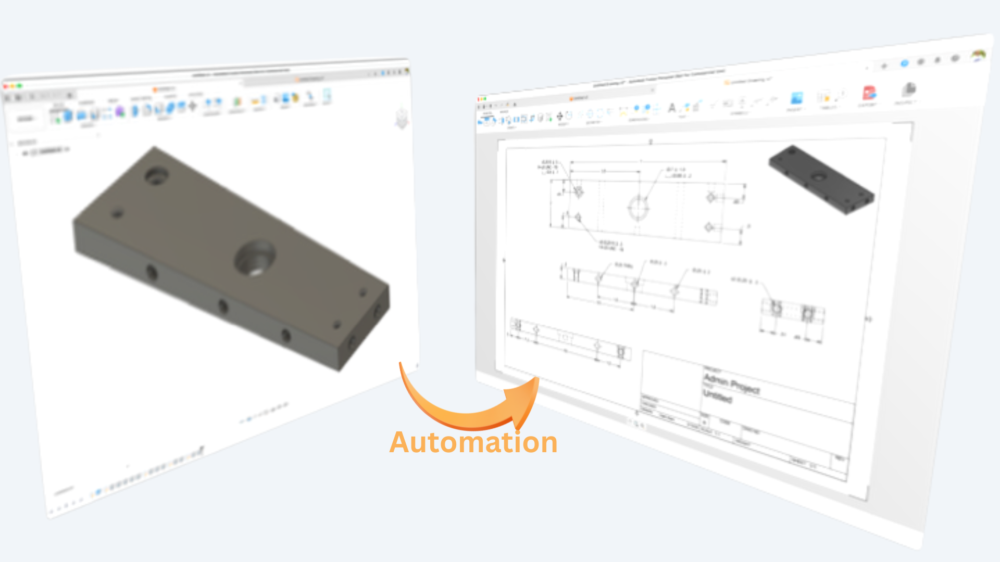
The business case: scaling through efficiency
The investment in Drawing Automation wasn't just about saving time; it was a strategic move to enable our customers to scale. Automating 2D documentation directly impacts ROI by increasing shop-floor capacity and reducing error-related production costs.
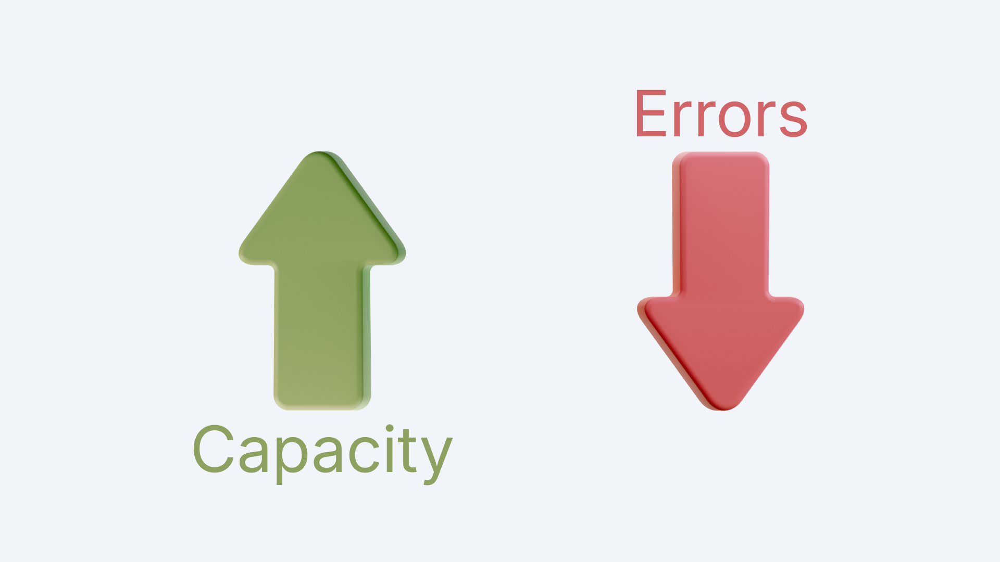
Strategic alignment: stakeholder mapping
I organized our stakeholders by how much influence and interest they had in the project. Instead of just making a list, I used this as a guide to see where I should focus on building trust to improve user transparency.
The engine room. I worked daily with the Dev Team and Product Manager to align on logic transparency.
The Dev Architect was key to managing technical debt and making sure UI decisions were feasible.
Leadership roles like the VP, who needed high-level proof that UX was driving ROI.
Sales and Marketing were kept in the loop for future market evangelism.
Requirements
Goals & tasks
Users wanted us to focus on the high-friction moments, with the goal of turning a lengthy manual process into a five-minute automated one.
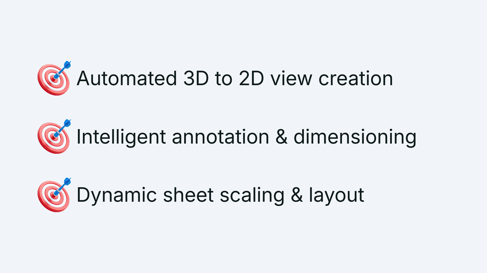
Opportunities
Beyond speed, we found chances to fundamentally change how the team worked.
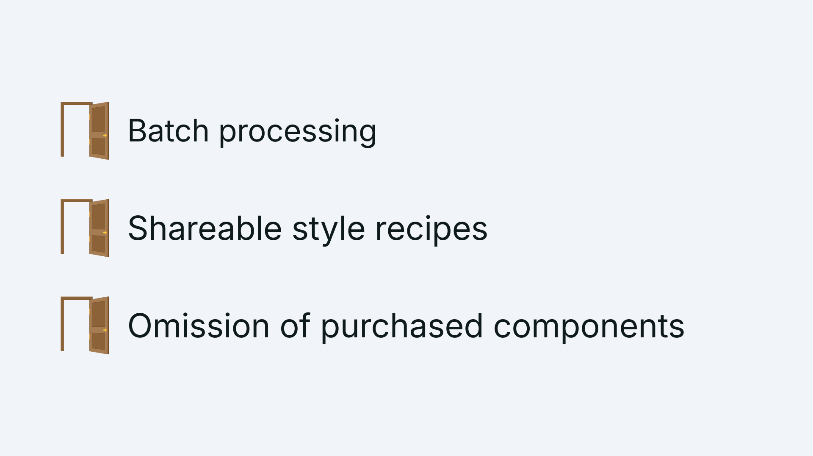
Functional & usability requirements
Users wanted full visibility and control over what was being created during the automation process.
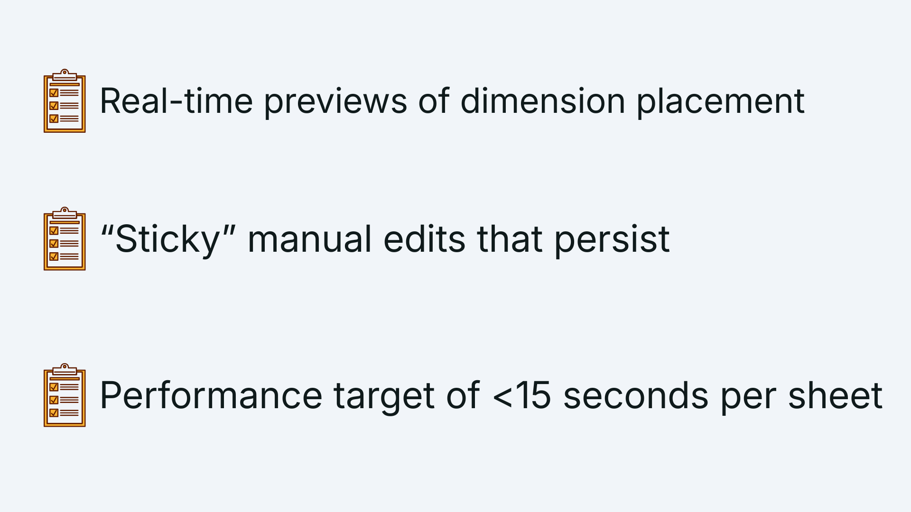
Success criteria
We didn't just want to build a tool; we wanted to solve a bottleneck.
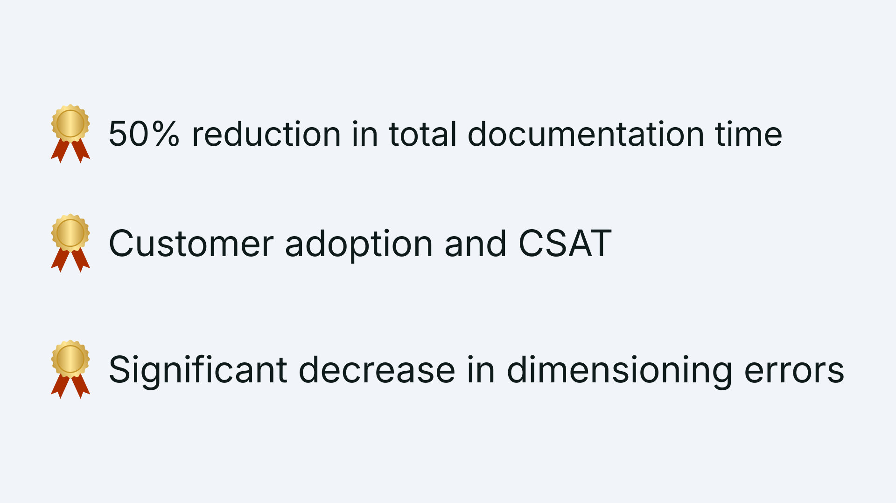
Design solutions
Stakeholder alignment
Joining a project mid-stream required building trust quickly. I focused on aligning leadership's vision with users' actual readiness, moving us from a “black box” approach to a transparent, phased rollout.
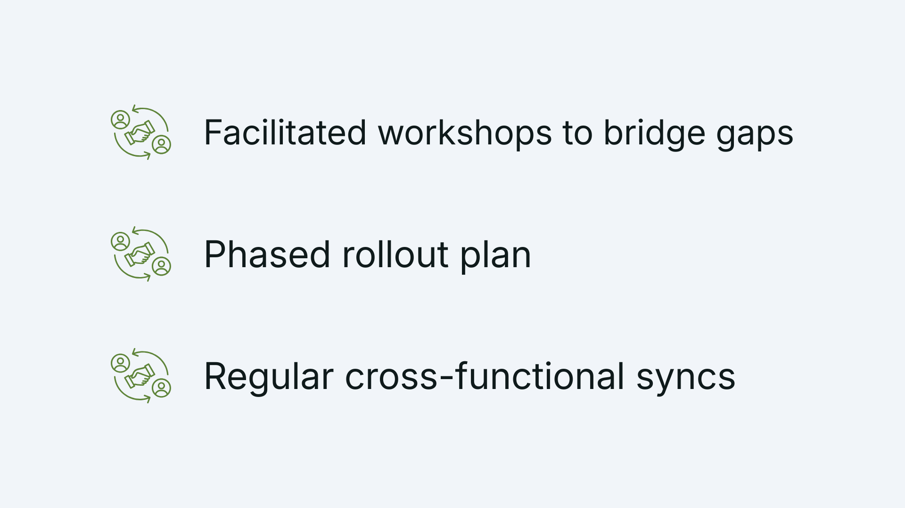
Wireframes
I started with rough wireframes to explore options for command access and for the user's control and visibility, while keeping the process streamlined and asking for user input only when it was truly needed or wanted.
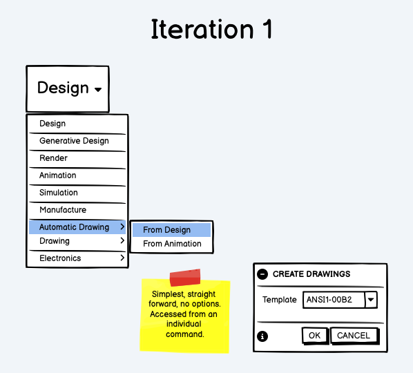
Prototyping the solution
I built an interactive prototype to demonstrate the workflow and gather further feedback from users and stakeholders.

Evaluation
Feedback loop: validation through iteration
I tested the ideas rather than relying on guesses. By bringing in Lighthouse Customers early, I put our wireframes and prototypes to the test. This helped maintain a high “trust score” throughout the process, across multiple design sprints.
- Weekly design critiques with the Dev Architect and Product Manager
- Bi-weekly usability sessions with lead engineers
- Real-time feedback through dedicated Slack channels
The heuristic audit
I started with a deep-dive audit to understand what the team had done before I joined, and to identify issues that needed to be addressed before the first public release.
Cognitive load
The original settings interface was cluttered with too many inputs. For engineers working quickly, this made things difficult. I redesigned it to show only the information users actually need to control.
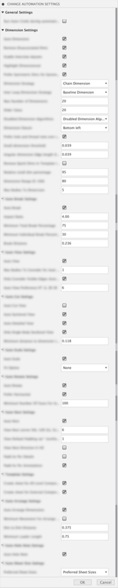
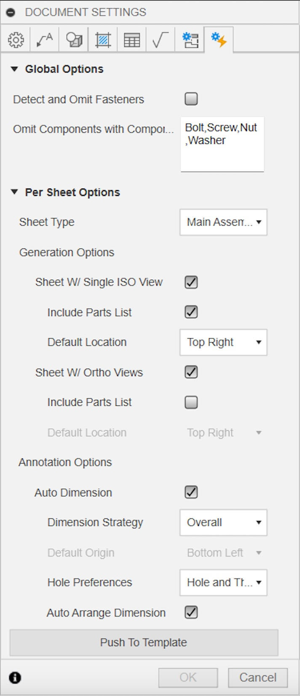
Transparency
Jon was most worried about not knowing what the machine was doing. To address this, we added a live sheet count. Now engineers can see exactly what will happen before they click “Generate.”
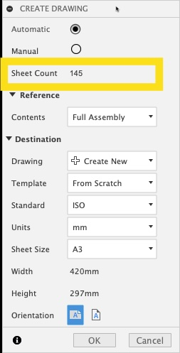
Accuracy
Automation only helps if it works correctly. I found that the system was hitting a set limit and missing important dimensions. I teamed up with others to fix these settings and, just as important, made sure users could adjust the limits, so Jon would never feel the system was letting him down.
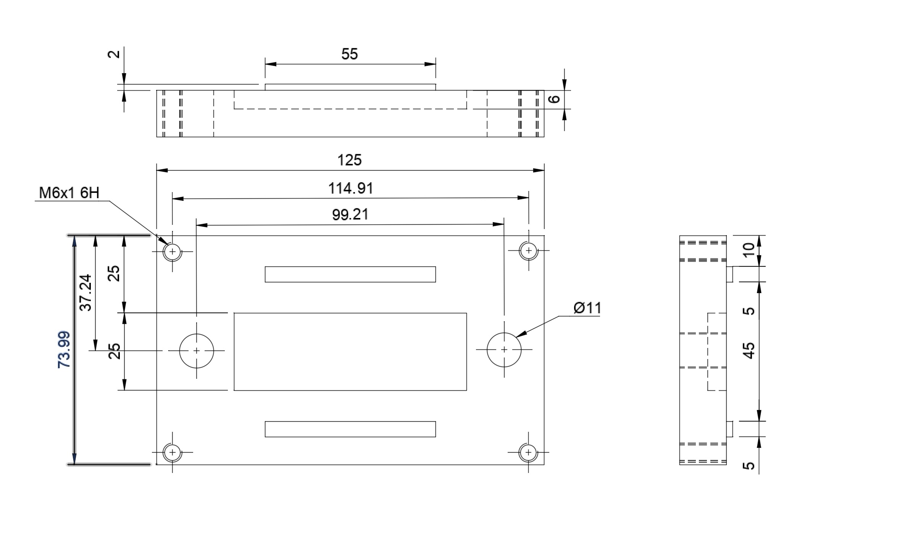
The engagement plan
I didn't just want to build for users; I wanted to build with them. I set up a structured engagement plan to turn our most vocal critics into our most valuable collaborators.
- 01
Lighthouse Customers
Key users committed to testing and giving honest, weekly feedback.
- 02
Beta forums & surveys
The Beta Forum and Qualtrics collected feedback from a wide audience to confirm findings at scale.
- 03
Private Slack channel
Internal designers, developers and experts worked together in real time to solve problems quickly.
- 04
Guided testing data
I provided curated data sets so users could see the benefits of automation right away.
User sentiment & validation
“That's really awesome news; we were waiting for something like this for a long time.”
Lighthouse user“I am irrationally excited for this. Way to go team!”
Beta community“Hey there, I did a test run on the features. The thing looks quite promising!”
Lighthouse user“I can't wait! This is FANTABULOUS features!!”
Beta communityWhile initial excitement was high, the engagement plan revealed specific technical hurdles:
Performance benchmarks. Users reported lag on massive assemblies, leading us to optimize engine speed.
Documentation gaps. We found edge cases where complex sheets were skipped during batch runs.
Recipe customization. Requests to pre-select dimensioning styles based on sheet classification.
Model readiness. Requests for pre-flight checks to make sure 3D models are ready for automation.
Hurdles cleared along the way
Technical debt
Building on a legacy system meant every decision had to be weighed against performance. I worked with the architects to make the automation feel fast, even with complex data sets.
Expectation management
Leadership wanted “push-button” magic; users wanted a tool they could trust. I navigated this disagree-and-commit situation by showing that trust is earned through transparency.
Team alignment
Joining 26 weeks late was challenging. I built trust with the team through the heuristic audit, so they could see I was there to help them finish, not to hold them back.
Complex compliance
Technical drawings have zero margin for error. I made sure our automation logic honored the strict legal and standards requirements of manufacturing.
Final thoughts
This project was a masterclass in leading from within. Joining 26 weeks into a development cycle meant there was no time for a slow ramp-up. I had to prove the value of UX through immediate, actionable insights like the heuristic audit and the engagement plan.
It reinforced a core belief of mine: even in the most technical, automation-heavy environments, trust is the primary currency. If the user doesn't trust the logic, the speed of the engine doesn't matter.
Bridging the trust gap
The biggest hurdle was the gap between business desires and customer readiness. Leadership wanted a “black box” that did the work for them; users like Jon wanted a tool that helped them work faster.
By advocating for transparency (exposing sheet counts, allowing manual overrides, and showing the intended logic before execution) we didn't just build a tool. We built a system engineers were actually irrationally excited to use.